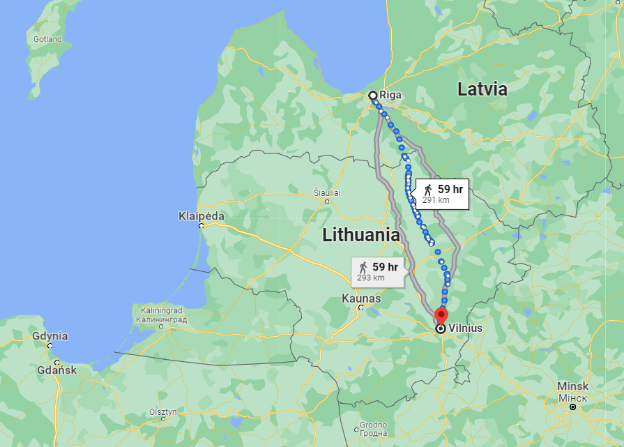
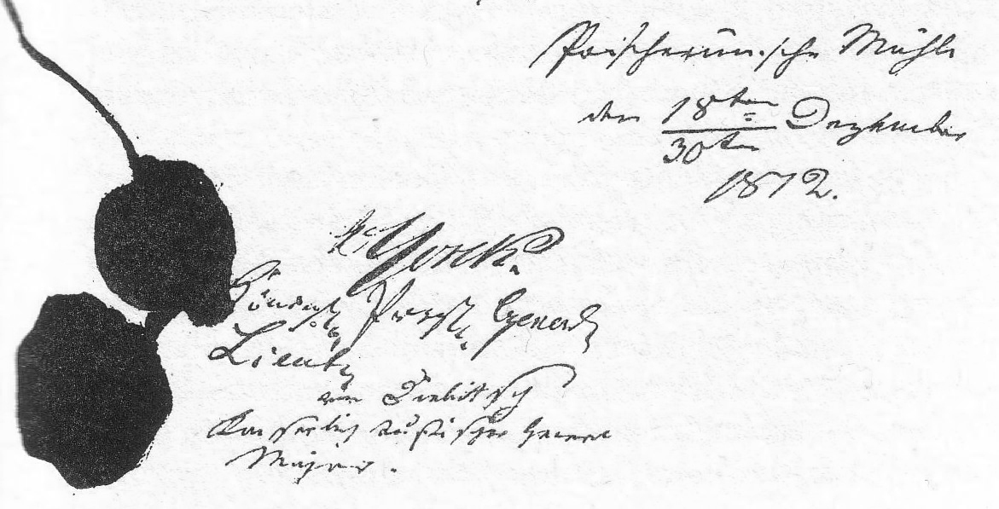
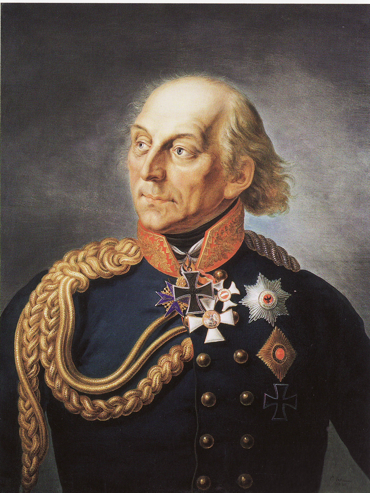
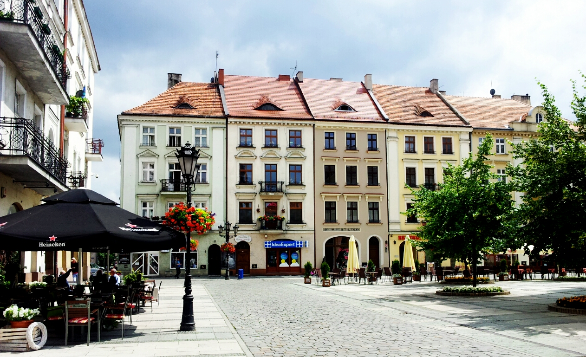
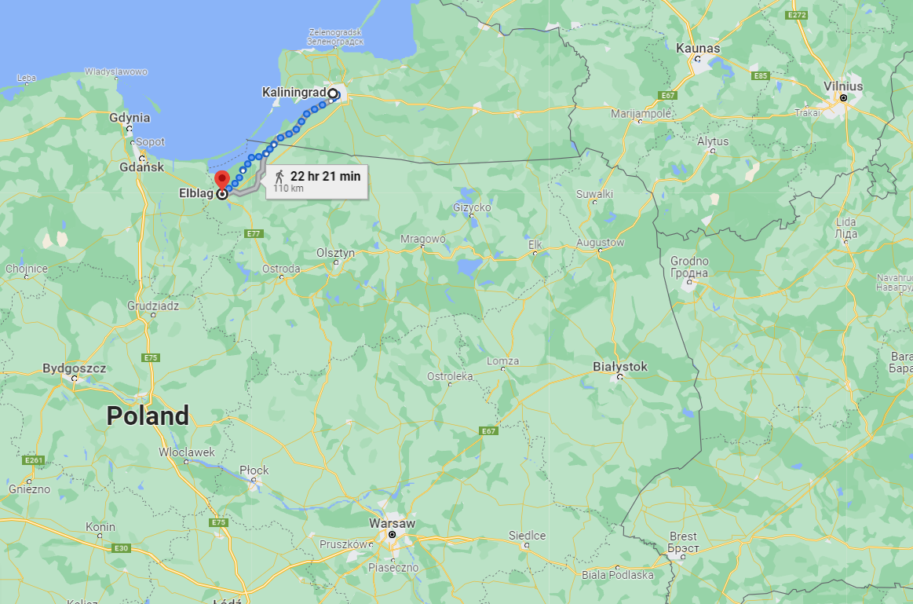
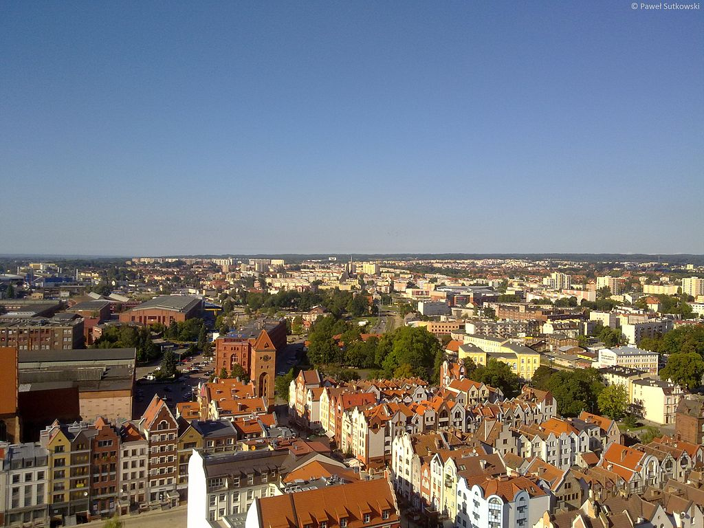
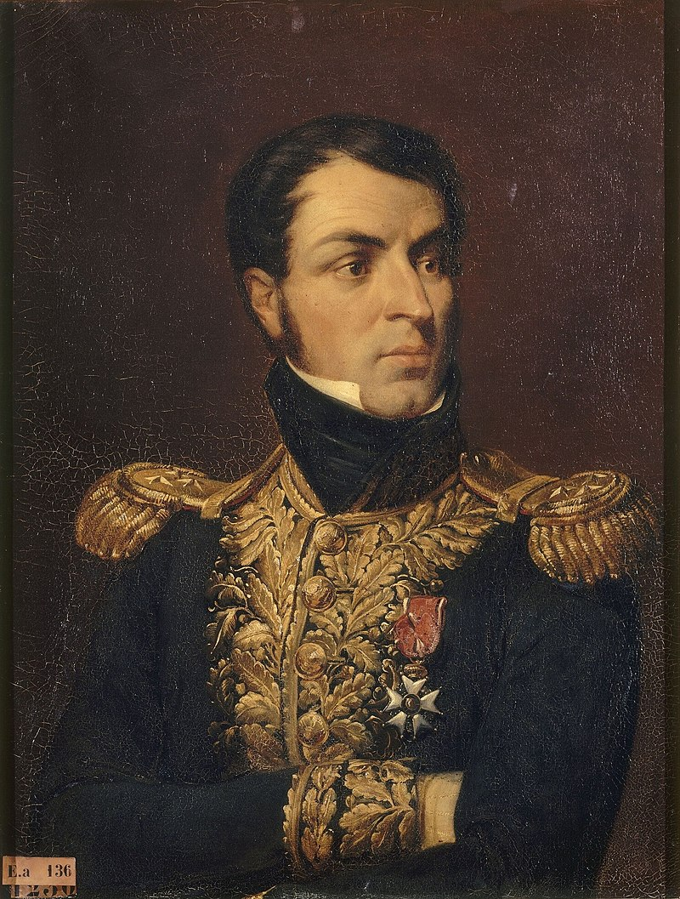

연쇄 반응 - 타우로겐 조약
게시: 2022-01-10T06:30:56+09:00
개전 초기부터 막도날은 약 3만 규모의 제10 군단을 이끌고 오늘날 라트비아의 수도인 리가(Riga) 방면을 포위 공략하고 있었습니다. 그런데 12월 초, 그랑다르메 본진이 빌나를 넘어 네만 강 너머로 철수하고 있다면 이제 리가 함락이 문제가 아니라 퇴로가 끊길 것을 걱정해야 할 상황이 되었습니다. 당연히 후퇴를 했습니다. 그런데 문제가 생겼습니다. 그의 제10 군단 중 절반은 요크(Ludwig Yorck von Wartenburg) 장군의 프로이센군으로 이루어져 있었는데, 이들이 말을 듣지 않기 시작한 것입니다. 막도날의 참모들은 프로이센놈들이 배신하려 한다며 불안해 했습니다. 막도날도 처음부터 높지 않았던 프로이센군의 열의가 요즘 확연히 떨어지고 있다는 것을 알고 있었습니다만, 그래도 긍지 높은 프로이센 군인의 명예 때문에라도 요크는 정식 명령 없이는 러시아군과 내통할 리가 없다고 생각했습니다.

(리가에서 빌나 또는 코브노까지의 거리는 불과 300km가 되지 않았습니다. 약 3일 행군 거리에 불과합니다.) 실제로 요크는 이미 11월 초부터 리가 수비군 사령관 에센(Essen)으로부터 편지를 받고 있었습니다. 그 편지 내용은 '모스크바에서 이미 나폴레옹은 철수하는 중이다, 그랑다르메는 끝났다, 프로이센군도 더 늦기 전에 편을 갈아타라'는 내용이었습니다. 구체적으로는 아예 막도날의 사령부에 협공을 가해 막도날을 사로잡자는 과감한 제안까지 들어 있었습니다. 하지만 요크는 막도날의 예상대로 군인의 명예 때문에라도 차마 그런 제안에 응할 수 없었습니다. 실은 군인이 적군과 편지를 주고 받으면서도 상관에게 보고하지 않는다는 것 자체가 적과의 내통이며 중범죄입니다. 요크가 군인의 명예 어쩌고 하면서 꾸물거리고 있다는 것은 이미 반쯤 넘어왔다는 뜻이었지요. 러시아군으로부터 재차삼차 편지를 통한 구애가 날아오고 그랑다르메의 패주 소문이 연달아 들려오자, 그도 짜르가 프로이센 국왕과 교신하는 것을 중계해주겠다는 것을 제안하는 수준에 이르게 됩니다. 그러다 뮈라가 빌나를 거쳐 후퇴하자 막도날드도 그 뒤를 따라 후퇴를 시작했습니다. 그런데 도중에 요크 장군은 꾸물거리며 막도날의 제10 군단 본대에서 떨어져 뒤쳐져지더니, 결국 거의 의도적으로 러시아군에게 포위되었고, 결국 러시아군과 휴전했습니다. 막도날은 믿었던 요크 장군이 그런 식으로 적과 내통하리라고는 상상하지 못했기에 상당한 충격을 받았다고 합니다. 하지만 막도날 등 프랑스군이 배신감을 느낀 것과는 달리, 프로이센군과 러시아군이 이렇게 휴전에 이르기까지의 과정은 쉽지 않았습니다. 양측은 서로가 서로를 믿지 못하고 적도 친구도 아닌 어정쩡한 상태로 한참을 대치하고 있다가, 프로이센 출신으로서 러시아군 사령부에서 복무하고 있던 클라우제비츠의 중재 노력으로 간신히 12월 30일에야 타우로겐(Tauroggen, 리투아니아어로 토레게(Tauragė)) 협정을 맺었습니다.

(타우로겐 조약 문서의 서명란입니다. 누가 잉크를 흘렸네요. 러시아측에서 서명한 디빗취 장군은 요크의 프로이센군의 퇴로를 가로막은 러시아 부대의 지휘관이었습니다.) 이 타우로겐 조약의 내용은 프로이센군이 프랑스가 주도하는 그랑다르메에서 이탈하여 중립을 지킨다는 것이었습니다만, 여기엔 많은 한계가 있었습니다. 일단 프로이센 국왕의 허가나 양해가 전혀 포함되지 않은, 요크 장군과 러시아측 디빗취 (Hans Karl von Diebitsch) 장군 간의 협약이었습니다. 게다가 프로이센군이 러시아군과 더 이상 싸우지 않는다는 것일 뿐, 프랑스군을 공격하는 것은 아니었습니다. 실제로 나중에 러시아 비트겐슈타인 장군이 요크 장군에게 프랑스군에 대한 공격을 요청하자 요크는 딱 잘라 거절했습니다. 그럼에도 불구하고 이 타우로겐 조약 소식은 프랑스와 프로이센 모두에게 큰 충격을 주었습니다. 프로이센에서는 이 소식을 열광적으로 받아들이며 요크 장군을 칭송했습니다. 그러나 그건 어디까지나 국민들 이야기였고, 국왕 빌헬름 3세(Friedrich Wilhelm III)는 나폴레옹의 눈치를 보느라 감히 기뻐하는 기색을 내보일 수가 없었습니다. 그는 형식적으로 요크 장군을 사령관직에서 보직 해임하는 편지를 보냈는데, 그나마 러시아군이 그 편지를 들고 가는 전령의 통과를 막았습니다. 그 해임 문서가 요크 장군 손에 쥐여진 것은 다음 해인 1813년 1월 8일, 비트겐슈타인과 요크가 함께 쾨니히스베르크에 입성한 다음이었는데, 이를 읽은 요크는 크게 역정을 내며 지휘권 반납을 거부했다고 합니다. 실제로 그에 대한 징계가 해제된 것은 빌헬름 3세와 알렉산드르 사이에 정식으로 동맹이 맺어진 1813년 2월 28일 칼리쉬(Kalisz) 조약 이후였으니, 그 사이에 요크의 입장은 몹시 난처했던 모양입니다.

(이건 노년의 요크 백작의 모습입니다. 요크 장군은 나폴레옹보다 10살 위였고, 원래 목사였던 그의 아버지도 젊은 시절엔 대위 계급으로 프리드리히 대왕 밑에서 복무하기도 했습니다. 그는 정규 사관학교가 없던 시절 신사 계급의 관례대로 13살에 프로이센군에 입대하여 5년 만에 소위로 임관했으나, 불과 2년 만에 상관 항명죄로 계급장을 뜯기고 1년간 투옥되었습니다. 이유는 당시 바이에른 왕위 계승 전쟁에 참전했던 그의 부대 지휘관이 저지른 약탈 행위를 20살 짜리 젊은 요크 소위가 비난했기 때문이었습니다. 풀려난 뒤에도 프리드리히 대왕 휘하로 복직이 거부되자, 그는 네덜란드 동인도 회사에 고용된 스위스 용병부대에 대위로 들어가 인도네시아에서 복무하는 등 여기저기서 용병 생활을 했습니다. 심지어 아프리카 남쪽 끝 케이프타운에서 프랑스군 소속으로 영국군과 싸우기도 했습니다. 그는 프리드리히 대왕이 사망한 뒤에야 프로이센으로 돌아올 수 있었고 결국 33세에야 소령 계급으로 프로이센군에 복직할 수 있었습니다. 그는 풍부한 전투 경험을 가진 뛰어난 전술가로서, 1806년 예나 전투에서 박살이 난 프로이센군의 후위를 맡았던 것이 바로 요크 장군이었습니다. 원래 막도날의 제10 군단에 들어갈 때 프로이센 사단의 지휘관은 친불파로 널리 알려진 그라베르트(Julius von Grawert) 장군이었는데, 그는 사단 내 2인자이자 열혈 프로이센 애국자인 요크와는 사이가 당연히 좋지 않았습니다. 그러나 신통하게도 그는 개전 초기 낙마 사고로 다리가 부러져 물러났고 요크가 프로이센 사단의 지휘관이 되었습니다. 일설에는 그라베르트의 낙마 사고도 핑계를 대기 위한 일종의 속임수였다고 합니다.)

(현대 칼리쉬의 Rynek, 즉 시장 광장입니다. 칼리쉬는 폴란드 땅이었다가 폴란드 분할 때 프로이센 땅이 되었고, 이어서 나폴레옹이 프로이센을 격파하면서 1807년에 창설된 바르샤바 공국의 땅이 되었습니다. 1813년 2월말에 러시아와 프로이센이 여기서 칼리쉬 협정을 맺은 것으로 짐작하시듯이, 결국 다시 프로이센 땅이 되었습니다. 지금은 다시 폴란드 영토가 되었습니다.) 이렇게 타우로겐 조약 이후에도, 적어도 칼라쉬 조약이 맺어지기 전까지 프로이센과 러시아의 관계는 어색하고 불안한 것이었습니다. 그러나 프로이센군이 러시아군과 단독으로 강화조약을 맺었다는 것은 프랑스군, 그리고 무엇보다 그 미심쩍은 동맹국들에게 엄청난 파장을 일으켰습니다. 일단 뮈라는 마치 이런 핑계거리가 생기기를 기다렸다는 듯이 '프로이센놈들이 배신을 했으니 어쩔 수 없다'라며 쾨니히스베르크에서 철수하여 100km 더 서쪽인 엘빙(Elbing, 폴란드어로 엘블롱그(Elbląg)로 후다닥 철수해버렸습니다. 뮈라부터 이 모양이었으니 호시탐탐 기회만 노리던 오스트리아가 가만히 있을 리가 없었습니다. 나폴레옹의 러시아 원정에서 남부군을 맡고 있다가 은근슬쩍 발을 빼 바르샤바 공국 남쪽으로 후퇴해있던 슈바르첸베르크 대공의 오스트리아군도 '뭐 대세가 이러니 어쩔 수 없지'라며 단독으로 오스트리아 본국으로 철군해버렸습니다. 오스트리아군이 일방적으로 철수해버리니 그들과 어깨를 나란히 하며 바르샤바 공국의 남부를 지키던 레이니에(Jean Louis Ebénézer Reynier) 휘하 제7 군단도 방법이 없었습니다. 대부분이 작센 병사들로 구성되었던 이들도 후퇴했고, 이제 바르샤바 공국의 동쪽 국경 전체가 완전히 무방비 상태가 되었습니다.

(엘빙(엘블롱그)은 쾨니히스베르크(칼리닌그라드)와 단치히(그단스크)의 중간 지점입니다. 뮈라가 쾨니히스베르크를 버렸다는 것은 바르샤바의 북쪽이 러시아군에게 훤히 노출되었다는 뜻입니다.)

(현대의 엘빙(엘블롱그)의 전경입니다. 지금도 인구 12만 정도의 소도시인데, 도시 전경이 꽤 예쁘지요? 전통이 있는 도시라서 그런가보다 싶지만, 실은 제2차세계대전에서 엘빙은 정말 철저하게 파괴되어 사실상 전체 도시를 다 새로 건설한 것이라고 합니다.)

(레이니에 장군입니다. 그는 원래 개신교 박해를 피해 스위스로 이주한 집안의 후손으로서, 스위스 로잔에서 내과 의사의 아들로 태어났습니다. 그는 19세이던 1790년부터 파리의 토목 기술 학교(École des ponts et chaussées, '교량과 제방 학교'라는 뜻입니다)에 유학 중이었는데, 바로 다음 해에 프랑스 국적을 회복했고 1792년에 22살의 나이로 포병으로 입대했습니다. 가방 끈이 긴 편인데다 예맙(Jemappes) 전투 및 니어빈든(Neerwinden) 전투 등 전투 경험도 풍부했던 그는 불과 3년 만인 1795년 준장으로 승진하며 승승장구했습니다. 그러나 그는 이후 나폴레옹의 정적인 모로 장군 휘하에서 복무했기 때문에, 나폴레옹의 이집트 원정에 참여했음에도 나폴레옹으로부터 '자기 사람'으로 인정받지 못했고, 덕분에 나폴레옹이 심복들과 함께 단독으로 이집트에서 귀환할 때 버려진 사람들 중 하나가 되었습니다. 더욱 나빴던 것은 이집트에서 간신히 돌아온 직후, 개인적인 일로 다른 장군과 결투를 벌여 그를 죽이는 바람에 한동안 보직도 받지 못하고 암울한 시절을 겪었다는 것입니다. 이후 이탈리아 전선 등지에서 활약했고, 바그람 전투 때에서야 비로소 두각을 드러내기 시작했습니다. 1813년 라이프치히 전투에서 그의 휘하에 있던 작센군이 갑자기 배신하는 바람에 그는 대불동맹군의 포로가 되었고, 포로 교환으로 풀려난 직후인 1814년 초 통풍으로 병사했습니다.) 이제 바르샤바 자체가 바람 속의 등불 같은 존재가 되어버렸습니다. 허술하게 무장한데다 전투력은 약했지만 약탈 솜씨 하나는 끝내줬던 코삭 기병 대군이 언제든 바르샤바 시내까지 밀고 들어와 폴란드 귀부인들을 희롱할 수 있는 상황이었습니다. 바르샤바 공국만의 문제가 아니었습니다. 바르샤바 공국이 무너지면 바이에른 왕국이나 작센 왕국, 뷔르템베르크 왕국 등의 라인 연방 소국들도 연쇄반응으로 프로이센의 뒤를 따라 배신할 가능성이 컸습니다. 기회만 노리고 있던 오스트리아는 말할 것도 없었습니다. 이런 위기 상황을 수습할 방법이 있었을까요? 사라졌던 나폴레옹이 여기서 등장합니다. Source : 1812 Napoleon's Fatal March on Moscow by Adam Zamoyski
https://en.wikipedia.org/wiki/Ludwig_Yorck_von_Wartenburg https://www.britannica.com/biography/Johann-David-Ludwig-Graf-Yorck-von-Wartenburg https://en.wikipedia.org/wiki/Julius_von_Grawert https://en.wikipedia.org/wiki/Convention_of_Tauroggen https://en.wikipedia.org/wiki/Taurag%C4%97 https://en.wikipedia.org/wiki/Elbl%C4%85g https://en.wikipedia.org/wiki/Treaty_of_Kalisz_(1813) https://en.wikipedia.org/wiki/Kalisz https://en.wikipedia.org/wiki/Jean_Reynier